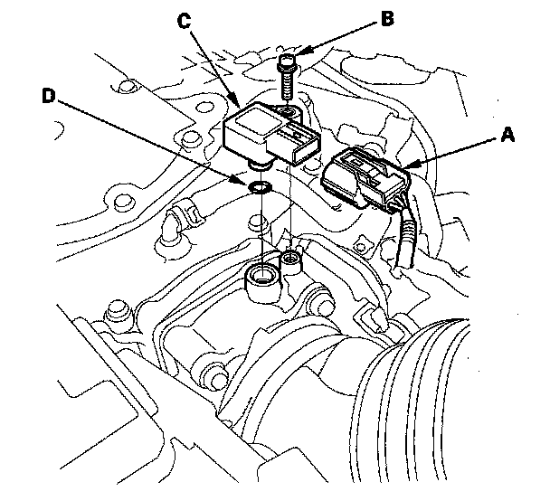

Manifold Pressure/Vacuum Sensor: Service and Repair
MAP Sensor Replacement1. Remove the engine cover.

2. Disconnect the MAP sensor connector (A).
3. Remove the screw (B).
4. Remove the MAP sensor (C).
5. Install the parts in the reverse order of removal with a new O-ring (D).